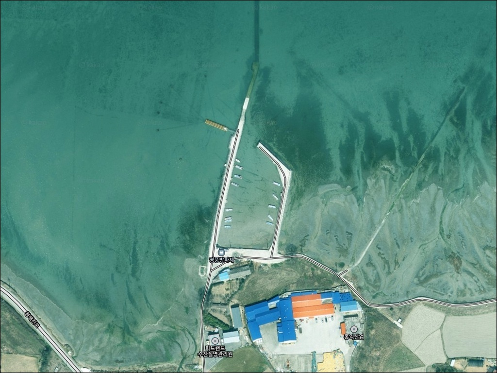
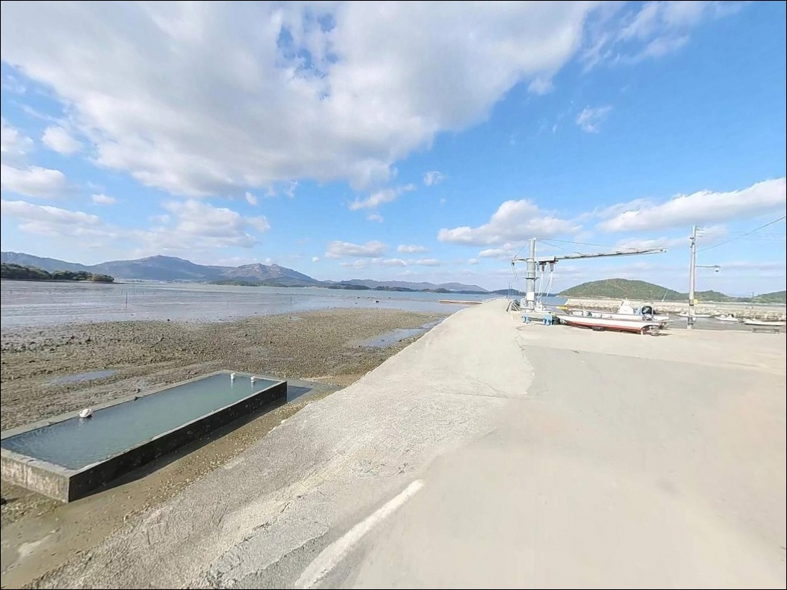
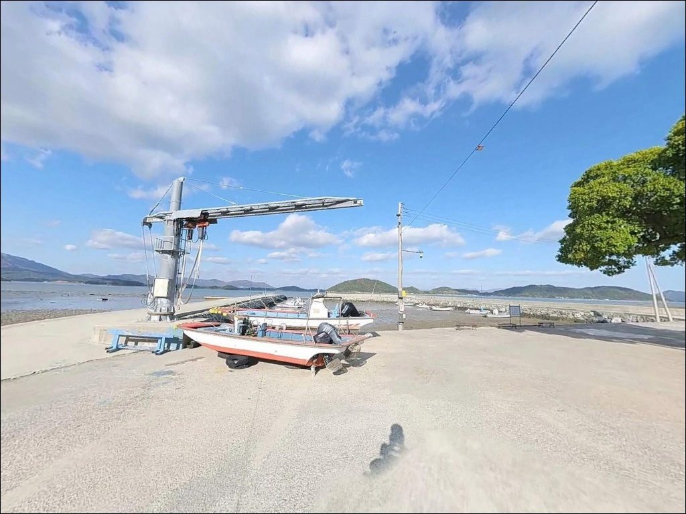
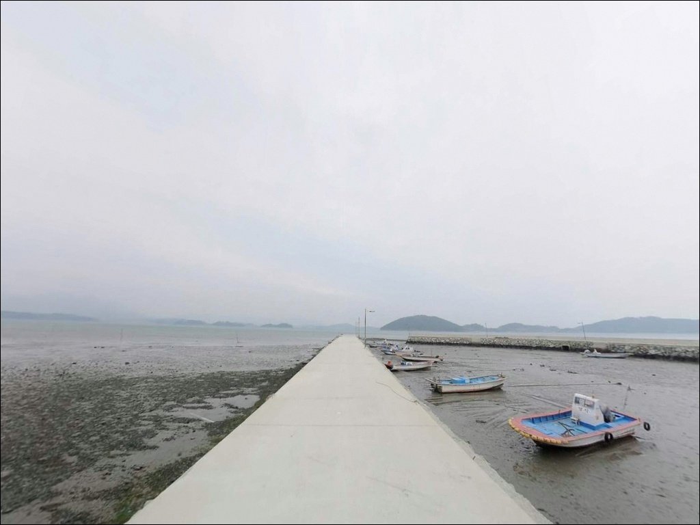
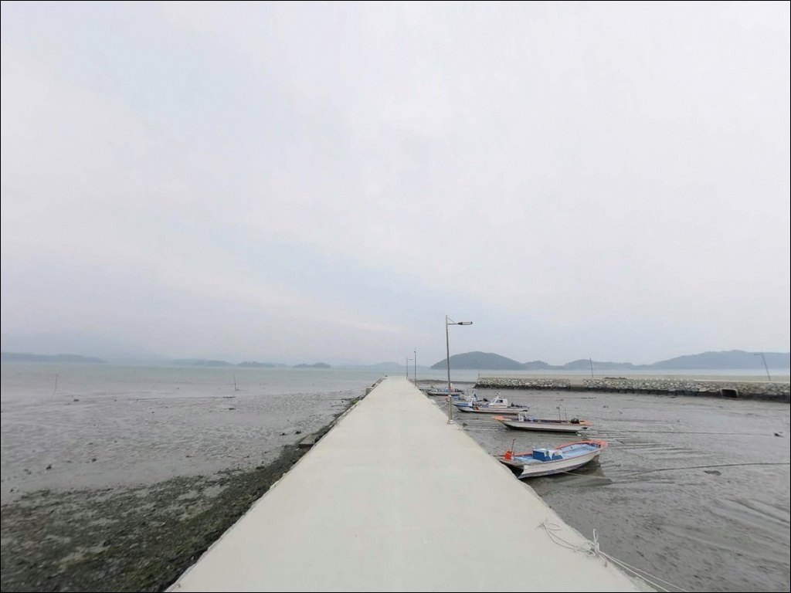
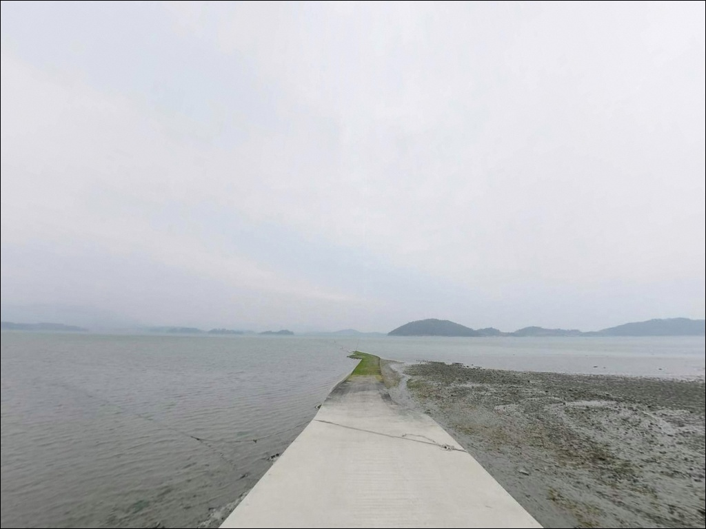
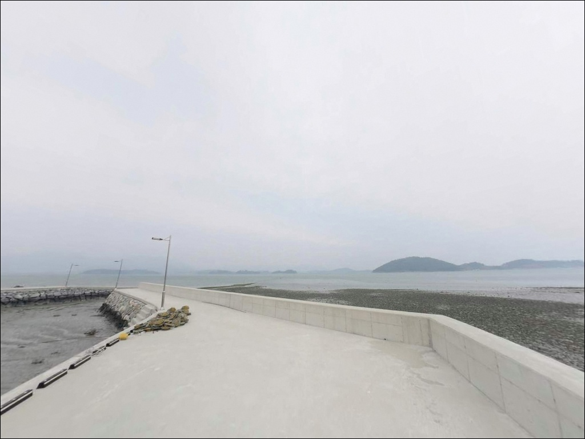
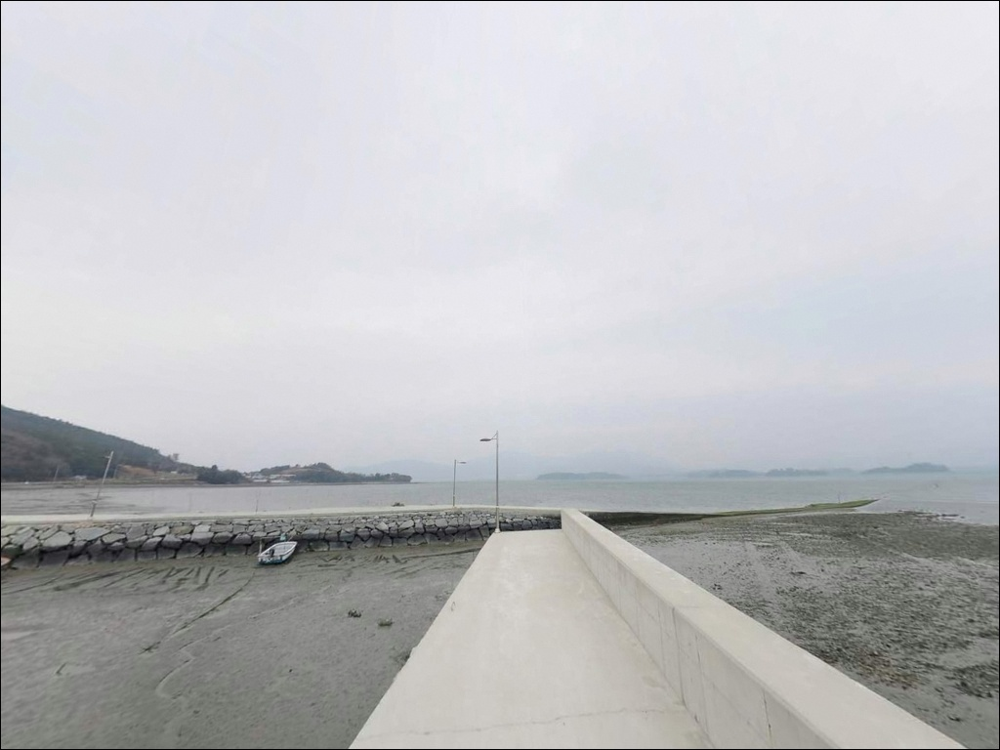
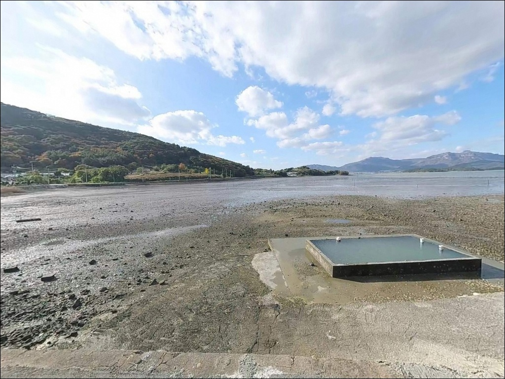

영풍방파제, 전남 완도군 숨은 명당이라 불리는 노지 바다 차박 낚시 스팟


포인트 안내
영풍방파제
전남 완도군 군외면 불목리 469-5
내만 방파제라서 물때와 무관하게
아무 때나 가도 된다는 판단이
이 포인트에서 가장 자주 나오는 실수입니다.
완도 북측 해역은 고마도와 사후도 등
섬 사이 수로를 통해 조류가 집중되는 구간이 있어,
타이밍을 맞추지 않으면 채비가 흐르지 않아
낚시 흐름 자체가 끊깁니다.
이 글은 영풍방파제의
진입 환경, 차박 여건, 지형 기반 낚시 조건,
어울리는 낚시 스타일에 집중합니다.
조황 단정이나 특정 어종 보장은
이 글의 범위에 포함되지 않습니다.

1. 포인트 위치 및 진입 동선 분석
영풍방파제는 완도 본섬 북부,
군외면 불목리 해안 끝자락에 자리합니다.
고마도와 사후도 등 인근 섬들이 외해 파도를
막아주는 내만 구조로,
전반적으로 잔잔한 수면 환경을 갖추고 있습니다.
77번 해안도로 또는 13번 국도에서
불목리 방면 소로를 따라 들어오는 동선이
일반적인 접근 방식입니다.
진입로는 마을 도로 수준으로
차폭이 좁은 구간이 포함되어 있습니다.
대형 SUV나 캠핑카라면
출발 전 위성지도로 불목리 진입로를
먼저 살피고 가는 편이 안전합니다.
방파제 입구에 도달하면
공터 형태의 주차 공간이 있으나
소형~중형 차량 1~2대 수용 수준입니다.
회차 공간은 방파제 초입 또는
불목리 마을 입구 부근에서 해결해야 합니다.
소형 어항 구조상 어선 이동 동선을
막지 않는 자리가 먼저이며,
방파제 접안면 가까이 주차할 경우
어선 작업 동선과 어구 간섭 여부를
반드시 확인해야 합니다.

2. 차박 환경 및 야간 체류 여건
영풍방파제 입구 공터는
낚시와 단기 체류를 병행하기에
구조적으로 가능한 공간입니다.
다만 전용 차박지가 아닌 공유 공간이므로
어선 조업 시간대와 겹치지 않도록
자리를 잡는 것이 기본 매너입니다.
불목리는 인구가 적은 소규모 어촌 마을로
야간 차량 통행이 거의 없는 편입니다.
민가 밀집도가 낮아 프라이버시는
상대적으로 양호한 환경이지만,
가로등이 충분하지 않아 개인 조명이 필수입니다.
내만 구조이더라도 사리 전후 기상 변화 시
파도가 방파제를 넘는 경우가 있으니
기상 확인 없이 야간 체류는 피해야 합니다.


3. 주변 편의시설 및 인프라 현황
영풍방파제 반경 3km 이내에는
대형 편의점이나 식당이 없습니다.
불목리 인근 소규모 점포에서
간단한 생필품 구매는 가능한 수준이나,
낚시 소품·식재료·식수는 출발 전 완비해야 합니다.
반경 10km권으로 이동하면
완도대교 인근에서 주유소와 편의점을
이용할 수 있습니다.
부족한 물품이 생겼을 때
완도읍 방향 동선을 활용하는 편이
가장 현실적인 대응입니다.
응급 상황 발생 시 이동 거리가 상당하므로
비상약품과 연료는 출발 전 철저히
갖추는 것이 기본입니다.
방파제 인근에 육상 해수 양식 시설이
위치할 수 있습니다.
양식 시설 배수구 및 작업 구역에
근접하지 않도록 자리를 선정해야 하며,
이 점은 주차 위치를 잡을 때도
함께 확인하는 것이 좋습니다.

4. 방문 전 반드시 확인해야 할 준비사항
이 포인트를 제대로 활용하려면
물때 확인이 먼저입니다.
완도 북측 내만권이라도
섬 사이 수로에서 조류가 집중되는 구간이 있어
바다타임에서 불목리 기준 물때를 확인하고
조류가 움직이는 타이밍에 맞춰
방파제 끝단을 노리는 것이 기본 전략입니다.
내만이라도 완도권 기상 변화는 빠릅니다.
출조 당일 아침 기상청 예보를
다시 한번 확인하는 것이 포인트 낭비를 막습니다.
여밭과 펄 지형이 혼재하는 구간에서는
채비 손실이 잦으므로
여분 채비는 충분히 챙겨가야 합니다.
마을 선착장 구조상 어선 조업이 이루어지는 공간입니다.
야간 낚시라면 헤드랜턴과 구명조끼는
반드시 착용해야 하며,
방파제 끝단 테트라 위 접근은
미끄러짐 사고 위험이 있어 주의가 필요합니다.

5. 지형 기반 낚시 여건 분석
영풍방파제 일대는 고마도와 사후도 등
주변 섬들이 외해 파도를 차단하는 구조라
내만 특유의 잔잔함을 유지합니다.
내항 쪽은 수심이 얕고 펄 지형이 발달한 편이며,
방파제 끝단 외항 쪽으로 갈수록
수심이 깊어지고 조류 영향을 직접 받는
구간이 형성되어 있습니다.
방파제 끝단 외항 쪽은 조류 흐름이 살아나면
에깅과 라이트게임 채비가 살아나는 자리입니다.
끝단 주변에는 해초와 여밭이 있어
두족류와 볼락류의 은신처 조건을
자연스럽게 갖추고 있습니다.
이 포인트에서 갑오징어 낚시 영상이
확인된 것은 이런 지형 배경 때문입니다.
내항 쪽은 펄 지형 특성상
밑걸림이 상대적으로 적고
잔잔한 수면을 활용하는 원투낚시에 적합합니다.
조류와 계절에 따라 편차가 크므로
출조 전 영풍방파제 또는 불목리 조황을
반드시 검색해 보시기 바랍니다.


6. 포인트에 어울리는 낚시 스타일 제안
이 포인트에서 가장 잘 맞는 방식 중 하나는
에깅입니다.
갑오징어 낚시 사례가 있는 포인트로,
완도 내만권 특성상 에기를 활용한
두족류 공략이 시즌별로 유효합니다.
가을에서 초겨울에 걸쳐 방파제 끝단 외항 쪽으로
에기를 캐스팅하고 천천히 끌어오는 방식이
이 지형에 맞는 기본 접근입니다.
볼락 라이트게임도 노려볼 만합니다.
방파제 끝단 주변 여밭과 해초대는
볼락이 서식하기 좋은 조건이며,
야간 소형 지그헤드 채비로
끝단 경계선을 천천히 탐색하는 방식이
어울립니다.
원투낚시는 내항 쪽 펄 지형을 활용합니다.
잔잔한 수면에서 채비를 멀리 보내
붕장어나 보리멸 계열을 노리는 방식이
이 포인트 지형에 현실적인 선택입니다.
정조 전후 타이밍에 채비를 보내
바닥을 천천히 탐색하는 것이 기본입니다.
농어 루어도 완도 군외면 일대에서
가능한 방식입니다.
완도 내만권 방파제에서 조류가 살아있는 타이밍을
맞추지 않으면 루어 반응이 줄어드는 편이라,
물때 확인 후 야간 시간대에
방파제 끝단 외항 방향으로 루어를 보내는
방식이 이 일대 지형과 맞습니다.

7. 대안 포인트 및 플랜 B 동선
영풍방파제 공간이 여의치 않거나
조류 여건이 기대에 못 미칠 때는
황진리 방파제가 첫 번째 대안입니다.
같은 군외면 해안선에 자리하며
완도 군외면 방파제 라인 중
낚시 포인트로 알려진 자리입니다.
인접한 불목리 방파제도
함께 둘러보기 좋습니다.
영풍방파제에서 약 900m 거리로
같은 해안선을 공유하므로,
두 포인트를 하루 동선에 묶어
상황에 따라 이동하는 방식이 효율적입니다.
원동리 방파제는 군외면사무소 인근으로
접근성이 상대적으로 양호한 편이며,
조류 영향이 있는 구간을 포함하고 있어
군외면 방파제 라인 이동 시
함께 묶어 탐색하기 좋습니다.
확실한 인프라를 원한다면
차로 약 15분 거리의
완도항 남방파제로 이동하는 방법도 있습니다.

조용한 내만에서
조류를 읽으면 달라지는 포인트입니다
에깅과 라이트게임을 즐기는 낚시인이라면
영풍방파제의 내만 지형과
방파제 끝단 여밭 구조는
잘 맞는 환경입니다.
갑오징어 에깅 사례가 있는 포인트이며,
원투·루어·에깅을 복합으로
운용하기 좋은 지형 조건을 갖추고 있습니다.
다만 조류 타이밍을 맞추지 않으면
채비가 살지 않는 내만 특성상,
물때 확인 없이 진입하면
기대보다 조용한 시간이 될 수 있습니다.
물때, 자급 준비, 진입로 사전 확인,
이 세 가지를 갖추고 찾아가면
완도 군외면의 조용한 바다를
제대로 즐길 수 있는 포인트입니다.
편의시설 없는 불목리 해안에서
방파제 끝단을 바라보며 하룻밤 머무는 일정이라면,
낚시와 차박을 조용히 즐기기 좋은
소박한 출조가 될 수 있는 자리입니다.